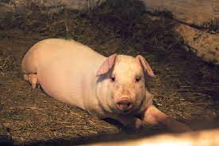
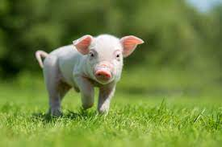
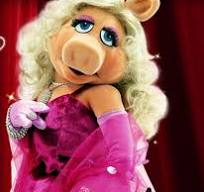

Sergi Pork

Sergi...puro embutido alicantino
es un marranillo en sus treinta y pocos años con cabello corto y oscuro. Tiene una barba bien cuidada
que le da un
aspecto sofisticado. Siempre viste con elegancia, prefiriendo trajes a medida y corbatas a juego. Sergi es
un
abogado de
éxito que trabaja en un bufete de abogados de renombre. Es conocido por su inteligencia y su habilidad para
argumentar
de manera persuasiva en el tribunal. Fuera del trabajo, disfruta de la música clásica y es un apasionado
coleccionista
de libros antiguos
Carlos Pork

Carlos es un cerdo de dehesa extremeña...vive como un rey.
es un chanchito de mediana edad con cabello canoso y una sonrisa amable que ilumina su rostro.
Tiene una
constitución robusta y una actitud relajada. Carlos es un veterinario que ama a los animales y se dedica a
cuidar de
ellos con pasión. Su clínica es conocida en la comunidad por su compasión y atención personalizada. En su
tiempo
libre,
Ivana Pork

Ivana es una cerdita venida de las mejores tierras de la pampa
es una joven marrana de veintitantos años con cabello largo y rizado de un color castaño claro. Tiene
ojos expresivos y
una personalidad efervescente. Ivana es una artista talentosa que se dedica a la pintura y la escultura. Su
obra
a
menudo se inspira en la naturaleza y las emociones humanas. Es una amante de los viajes y ha recorrido el
mundo
en busca
de inspiración para su arte. Ivana también es una defensora apasionada de los derechos de las mujeres y está
involucrada
en actividades de empoderamiento femenino en su comunidad